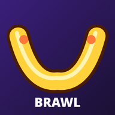

Effective: October 23, 2026. Applies to the Whackerang Android app (version 4.6.1 and later) and the web version at chirowsan.github.io/whackerang.
Whackerang is a cartoon party game made by Chirow H, an independent developer ("we", "us"). This page explains in plain words what happens to information when you or your child play.
Your progress (fighters, gold, unlocked looks, scores, achievements, daily challenges), your settings and your online display name are saved only on your device, in the app's private storage. We cannot see this information. Uninstalling the app, or clearing its storage in Android settings, deletes it for good.
The Android app asks for only two permissions: Internet (for optional online play) and Vibrate (for vibration feedback, which can be turned off in Settings). It does not use the camera, microphone, location, contacts, files or the advertising ID.
Single player, the campaign and matches against bots work without sending anything off your device.
There are two ways to play online:
During an online match the players' devices exchange only what the game needs: button and joystick inputs, the game state, the fighter and looks each player picked, the player's display name, and emotes from a fixed list. There is no text chat, no voice, no photos and no way to send free text. In the Android app, display names are chosen from a list of preset names (like "Zippy Fox"). In Auto match, other players always see a preset name.
When you tap Auto match, the game connects to our small matchmaking service, which runs on Cloudflare Workers. The game sends only the game mode you picked and a version number. The service gives the search a random, temporary ID, keeps the waiting list in memory only, and forgets it as soon as the search ends or a match starts. To stop one device from flooding the queue, the service turns your IP address into a short scrambled code (a salted hash) that is kept in memory only while you are connected. We never store or log it, and it is never linked to who you are. No permanent device ID or advertising ID is used.
0.peerjs.com), public "STUN" servers run by Google and Cloudflare, and, as a backup, the PeerJS community "TURN" relay. These services see your IP address and the room code while connecting. They are run by other organizations under their own privacy policies, and we do not control their logs.whackerang-relay.chirowsan-backyard.workers.dev). The relay only passes game data between the players of one room. It stores nothing and logs no game content. Cloudflare, as the hosting company, processes connection details such as IP addresses to run its network (see Cloudflare's privacy policy).We keep no record of online matches. Nothing about online play is stored by us.
Gold is earned by playing (wins, knockouts, daily challenges, login streaks, achievements) and is spent on cosmetic items inside the game. The Android app contains no real-money purchases. The web version has a "Buy gold" screen that is clearly marked TEST MODE: it charges nothing and contacts no payment service. If we ever add real purchases, we will update this policy first, and purchases will stay behind a grown-up check.
Whackerang is made to be fun and safe for families, including children. We do not knowingly collect personal information from children (or from anyone):
We designed the game to follow the U.S. Children's Online Privacy Protection Act (COPPA) and similar laws such as the GDPR by not collecting personal information from children. Parents and guardians can keep play fully offline by not using Play online, keep Auto match off (the default in the Android app), and remove all saved data by uninstalling the app. If you believe a child has sent us personal information in any way, contact us and we will delete it.
The web version is hosted on GitHub Pages. Like any web host, GitHub may log visitors' IP addresses (see GitHub's privacy statement). The web version stores progress in your browser's storage on your device only.
Online connections use encrypted channels (secure WebSockets and encrypted WebRTC). Because we store no personal data on servers, there is no player database that could leak.
If the game changes in a way that affects privacy (for example, adding purchases), we will update this page and the date at the top before the change goes live.
Questions or requests: [CONTACT EMAIL – Chirow adds this before store launch]